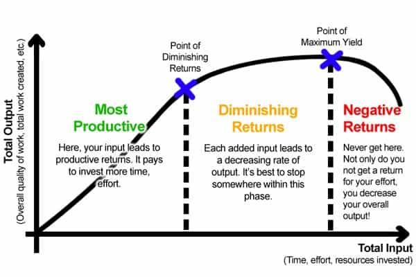

André is a young European who left his decaying country in 2012 for greener pastures. He enjoys exploring subterranean places, reading about a host of interconnected topics, and yearns for Tradition.


Ray Kurzweil is famous for promoting a very optimistic vision of the future, at least among the hip urban globalists. His core idea is that we will fuse with technology.
Our abilities will be multiplied! Life duration will be radically extended! We’ll be free from the limitations of our bodies, from diseases, from our narrow identities! We’ll be able to choose our gender, experience anything, know everything—and turn post-human! One definitive change inclusive to all other changes! Yay!
The end of individuals. Of genders. Of families. Of nations. Of identities. Only minds that have been crammed through years of propaganda perceive this endgame as “cool”, “edgy” and the like. Getting tattooed and pierced already means treating one’s body as an external commodity. We know it is a sign of degeneracy.
Fortunately, Kurzweil’s well-marketed dream shows impossible. Just like Communism, it is bound to fail ignominiously.

According to Kurzweil technology follows a pattern of accelerating returns. When technological development goes on and on, more and more discoveries are made, more and more power is harnessed. Thus the improvement rate always goes up until the Omega Point or “Singularity” is reached. (Actually, the latter is but a tech-washed rehash of the former.) Kurzweil devotees like to point out how computer science went through a series of always closer breakthroughs since the middle of last century as a prime example of accelerating growth.
In truth, development follows a pattern of diminishing returns. Sometimes a breakthrough is made, big changes are reached, but soon after the same technology starts to give less while asking for more work to be done. Going from 40 to 80 mph thanks to improved cars was a revolution in transportation, but going from 80 to 100 mph means only a small advantage in earned time, a much higher fuel consumption and an increased accident risk. Facebook was awesome but having a thousand Facebook, Twitter, LinkedIn and their alternatives is just noise.
Remember the infamous F-35, a useless fighter jet that has cost $1.45 trillion ($1.450.000.000.000) for advantages that are negligible compared with the much cheaper F-15?
Diminishing returns mean that, after the initial breakthrough euphoria, researchers run up with limits they may surpass at an exponential cost for a negligible gain. Try to fuse the whole world with that.
The world we were born and raised in is full of it. When we were blue pilled, we tried to balance the necessity not to be “sexist”—and the sincere gentlemanly desire to be “respectful”—with the natural need to get laid. Our equilibrium was ruthlessly blamed as hypocritical by uncaring loud mouths. Later, when we took the red pill, we started seeing much more shams than our innocent teenage shyness:
And so on indefinitely. The academia is full of sophisticated noise. The corporate world is full of BS-selling gurus and SJWs. The media has always been a manipulation tool aiming at shaping the public opinion, and today, media insularity has reached bias. The unemployed get redundant, useless jobs, like being a traffic cop at a red light, repeating what the automated light already says. Most of all of it is for the sake of appearances, and those who pretend to be creative or inspired are essentially rehashing stuff already told elsewhere.
Is all that BS a temporary ailment before the awesome singularity, or rather a sign that something is very, very wrong in the crowded cities? Can urban areas that systematically produce a degenerate culture and degenerate beings usher in a fantastic new age? Allow me to doubt it.
Cities thrive within globalized capitalism at the expense of rural areas. Basically, anyone who produces a good very cheaply and in enormous quantities will be able to inundate these places with his merchandise. Now imagine that a new crisis happens, perhaps a crash in food production or a power shortage. How many time before urban dwellers start fighting each other for food? If you stay there, you’d better be bulking, on a budget if needed.
Resilient or antifragile systems are able to sacrifice some of their parts and learn from their mistakes. They must be able to avoid the typical contagion effect, so that if an anomaly spawns somewhere, it is promptly dealt with. By contrast, an all-together system is prone to fatal accidents that will sink all of it. The Titanic was entirely sunk by one single iceberg because it couldn’t resist the overwhelming pressure of the water no matter how protected the hold was. A set of smaller boats would at worst have lost one of its members, and the survivors would have boarded in safety on the other boats.
The economy, because of its excessive reliance on the State-corporate-finance octopus, is hugely vulnerable. So are the cities. They depend upon complex, artificial routes for everything which is in—and they are overburdened. Recently a little Italian girl died of malaria because of a sub-Saharan immigrant who contaminated her. Innocents and do-gooders are exposed whereas the losers and leeches who put the whole system at risk are systematically bailed out. This unfair, fragile system is bound to fail.
Needless to say, the resiliency or antifragility of small, independent units ultimately flies in the face of one-world-ist arrogance. Empires that outperformed postmodern West in virtue and masculinity ultimately fell. Perhaps our Fukuyama, Kurzweil and the like are merely into make-believe about the supremacy of their West—which is definitely not our West. And perhaps their West needs to fall.
Kim Noble, “Caged”
Modernity went hand in hand with individualism and atomization. Postmodernism, far from interrupting the trend, intensified it by making individuals think of themselves as abstract units able to choose their gender as they could choose their outfits. Now a globalist could say this augurs well: nations, races, families, were all blunders on the road of the One Perfect Unified World. Atomized individuals are indeed more prone to follow the trends, to obey peer pressure, and to remain forever trapped into a relation of dependence towards the system. Isn’t that perfect to lead them towards some great unification?
Facebook enjoyed a tremendous success because it made people able to connect with like-minded individuals. Millenial girls are famous for their complacent narcissism, autism, and lack of proper sociability. If a trend is going on, it is communautarianism, networking, getting back to a tribe—not fusing with the entire world.
In France I noticed a strategic media bent as EU integration fell out of media fashion to get replaced by more chauvinistic references. The Bolsheviks spent decades telling Russians their identity resided in socialism, yet when the WW2 broke out they had no choice but to pay respect again to Mother Russia.
People need palpable identities and, aside from half-autistic techies, no one derives his identity from fantasies of technological fusing.
People also need a minimum of recognizable conflict or difficulty in their lives. Otherwise they become bored and start indulging in shameful pleasures like collecting beta orbiters. Reality shows, trashy stuff attract attention for a reason. Any narrative needs antagonists. 90s’ movies used aliens to create a feeling of human identity. Unless people undergo unimaginably radical changes, they won’t become mere cells in a Gaian superorganism.
Originating from behaviorism and cybernetics, cognitive science starts from the assumption that the mind is built like a computer. Just like its intellectual ancestors, this model was a cherished tool of the elite. It allowed to reverse-engineered the mind as if it was a computer: that is, as a set of modules processing information. Such model tends to deny agency, willpower, even consciousness. It makes individuals soulless, at mercy of being rewritten or reprogrammed.
As for singularity, computers only have a relative individuality because they were built that way: the Internet of Things is already replacing it with an indefinite set of interrelated objects. If people are like computers, they can be fiddled with until they are in such a state of interconnection they won’t be differentiated anymore.
Real minds are not like that. Individuals are conscious. They have faculties—powers, something cognitivists loathe when they cannot represent them as a pure result of dead processes. They have vocations. They have identities that cannot be completely rerouted and resolved into empty fashions, virtue-signaling, or fleeting pleasures. They have spiritual needs that New Age baloney won’t blind forever.
When you acknowledge that individuals, the sexes, cultures, populations… are different at bottom, pretending they can merge with technology and fuse becomes much harder. Nature made us more complex than arrogant techies will ever understand. Which is quite a good thing.
I have no crystal ball. Still, a general urban collapse seems far more likely to me than an extravagant hope in high-tech. The only thing that matters is that we do not fall with the wicked world. Untold numbers are already living the crowded areas for the land or at least middle-sized cities, where one can live around relatively trustworthy neighbours, have space to own supplies, perhaps own a garden and live far from the gangs of roaring criminals.
Singularity and related globalist myths only exist because urban leeches are able to extract wealth from the real makers. Which countryman could have invented behaviorism, Keynesian economics, singularity and other ideas that seem to come from a void? Kurzweil’s idea would turn the entire world into a giant New York. It would also be a definitive victory over the good people, a sealed denial of the red pill truths. On the other hand a collapse will be painful, chaotic, but it will let room for the true light to come back on Earth. Those who keep living into a blue-pill dream machine may have a rude awakening.
Read Next: Bizarre Science Fiction Novel Sheds Light On What The Technological Singularity Will Be Like